My travel blog
About me:
My name is Nikoleta.
I love travelling. 😀 Here, I will tell you about very beautiful places I have visited.
I will give you a lot of helpful advice and I will help you to plan your exciting trips.
Enjoy
Barcelona
Rome
Barcelona
About Barcelona
Barcelona is a city on the coast of northeastern Spain. It is the capital and largest city of the autonomous community of Catalonia, as well as the second most populous municipality of Spain. With a population of 1.6 million within city limits, its urban area extends to numerous neighbouring municipalities within the Province of Barcelona and is home to around 4.8 million people, making it the fifth most populous urban area in the European Union after Paris, the Ruhr area, Madrid, and Milan. It is one of the largest metropolises on the Mediterranean Sea, located on the coast between the mouths of the rivers Llobregat and Besòs, and bounded to the west by the Serra de Collserola mountain range, the tallest peak of which is 512 metres (1,680 feet) high.
Founded as a Roman city, in the Middle Ages Barcelona became the capital of the County of Barcelona. After joining with the Kingdom of Aragon to form the confederation of the Crown of Aragon, Barcelona, which continued to be the capital of the Principality of Catalonia, became the most important city in the Crown of Aragon and the main economic and administrative centre of the Crown, only to be overtaken by Valencia, wrested from Arab domination by the Catalans, shortly before the dynastic union between the Crown of Castile and the Crown of Aragon in 1492. Barcelona has a rich cultural heritage and is today an important cultural centre and a major tourist destination. Particularly renowned are the architectural works of Antoni Gaudí and Lluís Domènech i Montaner, which have been designated UNESCO World Heritage Sites. The city is home to two of the most prestigious universities in Spain: the University of Barcelona and Pompeu Fabra University. The headquarters of the Union for the Mediterranean are located in Barcelona. The city is known for hosting the 1992 Summer Olympics as well as world-class conferences and expositions and also many international sport tournaments.
Barcelona is a major cultural, economic, and financial centre in southwestern Europe, as well as the main biotech hub in Spain. As a leading world city, Barcelona's influence in global socio-economic affairs qualifies it for global city status (Beta +).
Barcelona is a transport hub, with the Port of Barcelona being one of Europe's principal seaports and busiest European passenger port, an international airport, Barcelona–El Prat Airport, which handles over 50 million passengers per year, an extensive motorway network, and a high-speed rail line with a link to France and the rest of Europe.
Things to do in Barcelona
When visiting this great city, one must at least see one of the great masterpieces of:
(If you click on the name, you can see information about the tickets and where and how to buy them.)
- Sagrada Familia: To visit the Sagrada Família Barcelona is to discover the exterior and interior of the unfinished work of the architect Antoni Gaudí, who devoted all his efforts to it, without respite, until his death in 1926. The crypt and the facade of the Nativity were declared World Heritage by UNESCO in 2005. The basilica was consecrated by Pope Benedict XVI on November 7, 2010.
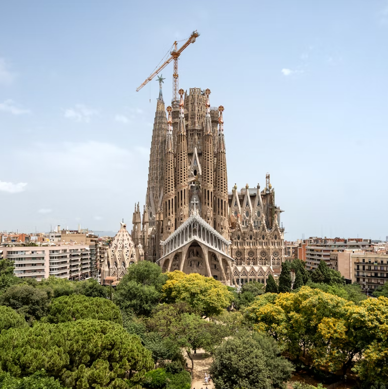
- Casa Batlló: The Casa Batlló (Batlló house ) is the most original and dreamlike house of the architect Antoni Gaudí in Barcelona. Polychrome facade decorated with ceramic and glass, undulating roof allegory of Saint George killing the dragon. The fundamental work of Catalan modernism, being Gaudi the incontestable leader. It was built between 1904 and 1906. Located at 43, Passeig de Gràcia, in the heart of the Eixample district and precisely in the center of the famous block called “Manzana de la Discordia “.
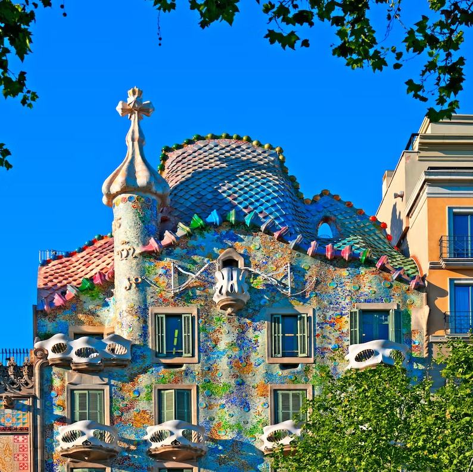
- Park Güell: The Park Güell is one of the most mythical places in Barcelona. The masterpiece of architect Antoni Gaudí is one of the city's tourist attractions, but only part of the 17-hectare park is freely accessible. Since 2013 the visit of the part built by Gaudi is indeed payable. Knowing that visitors have limited space for their well-being, it is important to book your Park Guell ticket in advance to avoid wasting time on the day of the visit or, more foolishly, losing the day. This is the object of this page which proposes you the best tickets to comfortably discover a monument inscribed on the UNESCO World Heritage List.
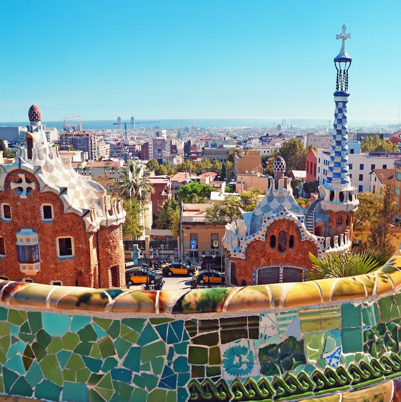
- Camp Nou: The Barcelona Football Club offers you the opportunity to visit its mythical stadium: Camp Nou. The Camp Nou is undoubtedly the other temple of the city, the largest stadium in Spain and Europe.
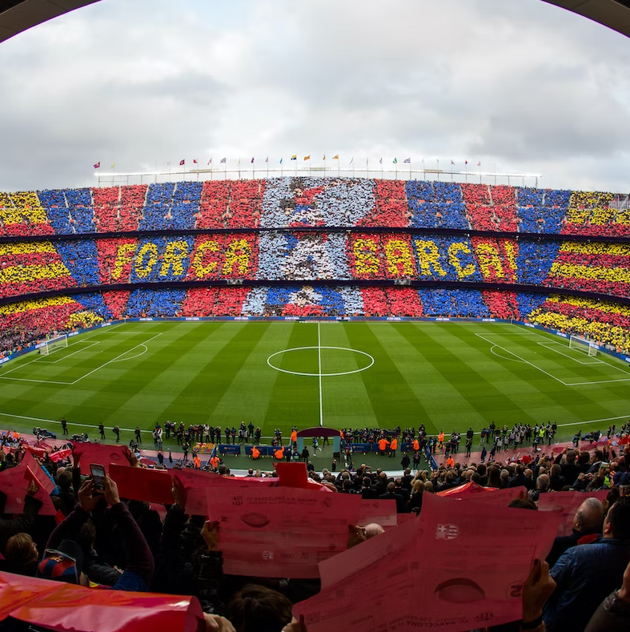
- Barcelona Zoo: Barcelona Zoo is located in the Parc de la Ciutadella in the heart of the city, a stone's throw from the Born district. Considered one of the most beautiful in Spain, it has the advantage of allowing visitors to almost touch the animals thanks to its open fences. Created in 1892, the zoo houses about 2000 animals of 300 different species. It is also famous for its 1300 trees, plants and flowers of 332 different botanical varieties. It is therefore a journey in a rich fauna and nature that you will make by visiting it.
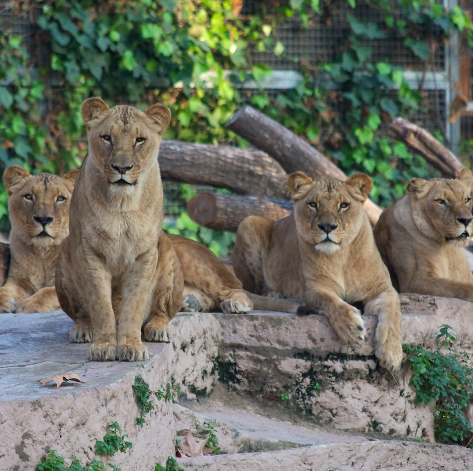
- Poble Espanyol: Built for the Universal Exhibition of 1929, the Poble Espanyol is a life-size reproduction of different Spanish villages. Located in one of the most emblematic areas of Barcelona and a few meters from the renowned Fountains of Montjuïc, the Poble Espanyol is one of the major tourist destinations of the City with its unique attractions : architecture, crafts, contemporary art, shopping and gastronomy. All in a festive, as well as an informative environment, is an ideal place for adults and children alike to visit.
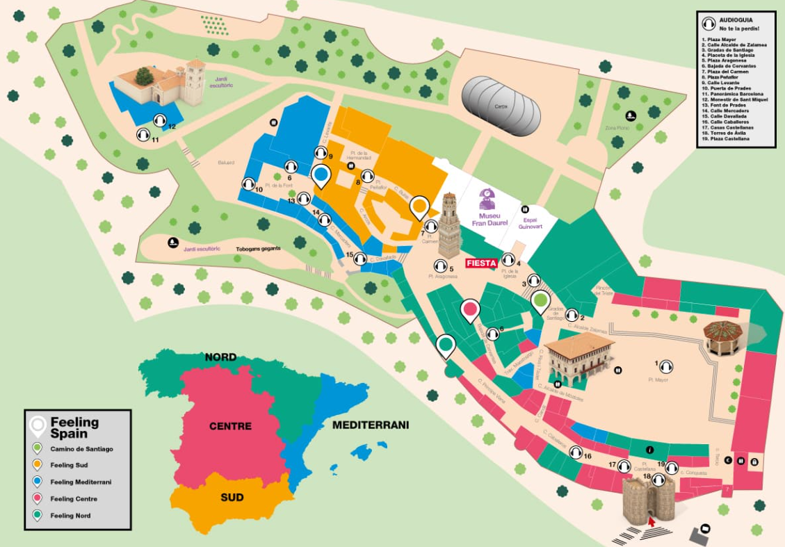
- Barcelona Aquarium The Barcelona Aquarium is Europe's most important recreational and educational marine center, but also the richest in the world for Mediterranean fish species. Imagine 21 large aquariums, 11,000 animals of 450 different species, an underwater tunnel 80 meters long, six million liters of water and an immense Oceanarium, the only one in Europe. A colorful, sensory and educational visit! A tourist attraction for more than 1,500,000 visitors per year making it the 4th most visited place of Barcelona.
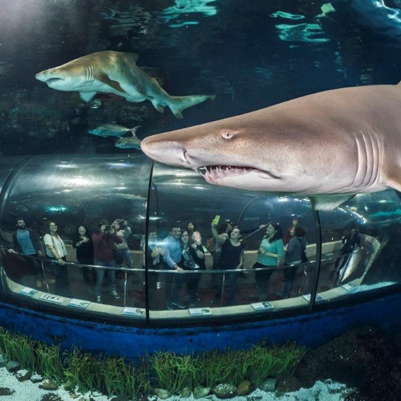
Rome
About Rome
Rome (or Roma in Italian) is the capital of Italy and has a population of 2.8 million, the Romans. According to legend, Rome was founded by the twins Romulus and Remus in 753 BCE. The city is located on the banks of the river Tiber and was founded on top of seven hills; Palatine Hill, Aventine Hill, Capitoline Hill, Caelian Hill, Esquiline Hill, Quirinal Hill and Viminal Hill. Particularly the area around Palatine Hill and Capitoline Hill would later become the centre of power of the enormous Roman Empire. You can find many ruins and excavations here of the Forum Romanum and the Colosseum gives you an impression of how gladiators had to do battle in this enormous Roman amphitheatre. The Pantheon, which is now a church, has its characteristic round, open roof and is one of the best kept buildings from Roman times. And the Via Appia takes you back in time along one of the oldest roads of Rome Italy. Basically, the city of Rome is one giant museum. It is therefore no surprise that the complete historic city centre is on the UNESCO World Heritage List.
Things to do in Rome
When visiting this great city, one must at least see one of the great masterpieces of:
(If you click on the name, you can see information about the tickets and how to buy them.)
- Colosseum:Flavian emperor Vespasian had this amphitheatre that could accommodate 65,000 spectators built in the year 72 CE. Construction of the Colosseum took eight years and was financed with plunder taken from Jerusalem. The Colosseum, also called the Amphitheatrum Flavium, was opened by emperor Titus with games and festivities that lasted 100 days and cost the lives of 5,000 animals. Emperor Domitian, Titus' successor, later expanded the amphitheatre with an extra storey and a number of spaces underneath the Colosseum. This made the Colosseum of Rome the largest amphitheatre in Roman history, and it is considered one of the seven wonders of the world.
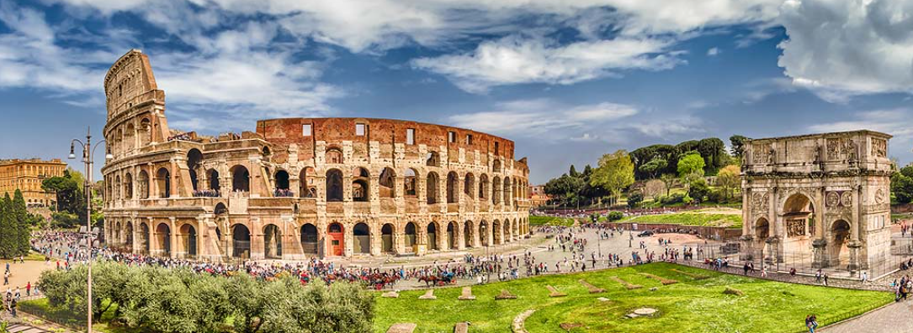
- Trevi Fountain Rome: The almost 30-metre high Trevi Fountain was built against the back of the Palazzo Poli building. In the centre underneath the arch stands the statue of the nautical god Neptune, being pulled to the sea on his shell-shaped chariot pulled by two winged horses and tritons (young gods of the sea). One of the horses is calm and obedient, the other is boisterous. They symbolise the changing tides of the sea. The two statues in the niches (made by Filippo della Valle) next to Neptune represent Abundance to the left and Health to the right. The name La Fontana di Trevi is derived from tre via, or three roads. Three roads used to come together at the site of the fountain
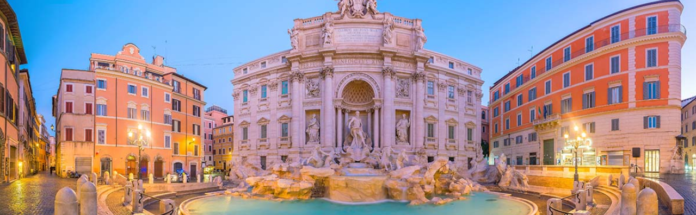
- The Pantheon:The Pantheon is one of the most recognisable Roman buildings in Rome's city centre. Construction of the Pantheon Rome started in 27 BCE on the order of Marcus Agrippa. It is one of the few buildings from ancient Rome that has stayed completely intact. The current temple and characteristic round dome were not built until the 2nd century, under emperor Hadrian, after Agrippa's building was damaged by a large fire in 80 CE and again in 110 when it was struck by lightning. The façade shows the following text in bronze, M.AGRIPPA.L.F.COS.TERTIUM.FECIT. It means, Marcus Agrippa, son of Lucius, third-time consul, has built this. Interestingly, this text was added during the rule of emperor Hadrian.
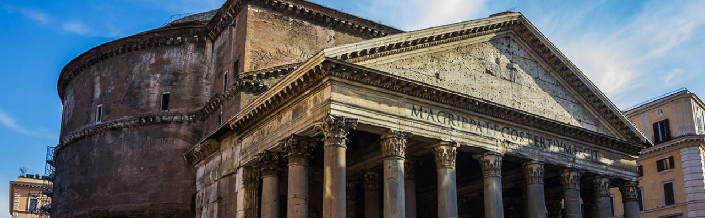
- St. Peter's Basilica in Rome:The Basilica di San Pietro in Vaticano was built between 1506 and 1626 on the site of a church dating from the time of emperor Constantine the Great (324). According to tradition, this church contained the grave of Peter. Because building St. Peters Basilica took so long, several designers worked on it, including Bramante, Raphael, Antonio del Sangallo, Michelangelo, and Carlo Maderno. Many of the decorations in the Basilica are the work of Gian Lorenzo Bernini. One of the most impressive aspects of the Basilica are its dimensions 136 metres high and 186x123 metres wide.
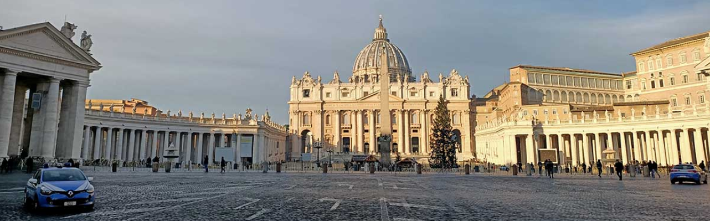
- Vatican MuseumsThe Vatican Museums (I Museu Vaticani) are some of the largest museums in the world with an enormous collection that varies from ancient Roman and Egyptian artefacts, religious objects, beautifully painted rooms and even modern art. The 26 different museums of the Vatican are housed in a complex of multiple Apostolic palaces, and are by far the most popular museum destination in Rome, in part because of the famous Sistine Chapel. During your visit, you will marvel at the many art treasures that the popes have collected in 54 halls since the 16th century.
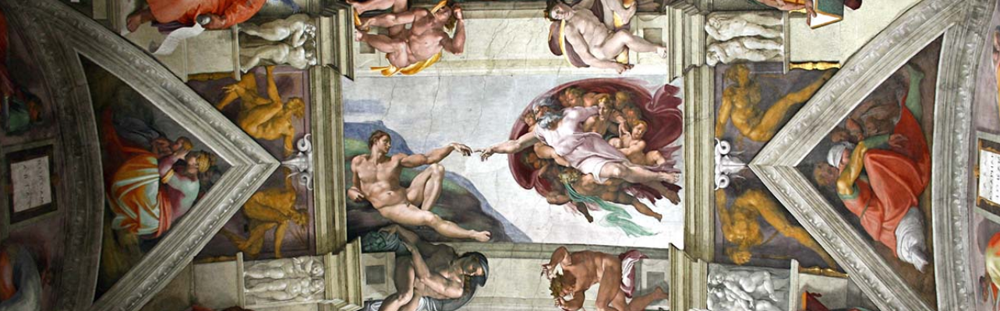
- Piazza NavonaPiazza Navona is one of the most beautiful and famous squares in the centre of Rome. In 86 CE, emperor Domitian commissioned this square with its unique, elongated shape. This shape is the result of its original function as the stadium for athletics competitions (Circus Agonalis) with stands for 20,000 spectators. Pope Innocent even organised so-called water games during the hot summer months, for which the whole square was put under water. After the fall of the Roman Empire, houses were built where the stands used to be, but the long athletics field remained free of buildings and would later become Piazza Navona.
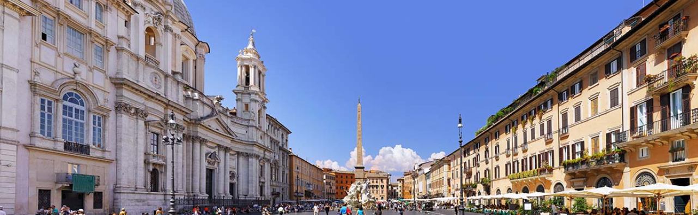
- Castel Sant'AngeloThe Castel Sant’Angelo was built in the 2nd century as a mausoleum by order of emperor Hadrian. The mausoleum did not become associated with the name of archangel Michael until 590, when Pope Gregory I saw archangel Michael sheathe his sword on top of the mausoleum during a plague to signal the end of the epidemic. Later pope Pius II built a chapel at the site where the archangel was said to have appeared. The remarkable bronze statue of archangel Michael was made in 1753 by Peter Anton von Verschaffelt. The Castle of the Holy Angel in Rome also owes a lot of its fame to the film adaptation of Dan Brown's Angels & Demons, where the castle served as a hideout for the Illuminati.
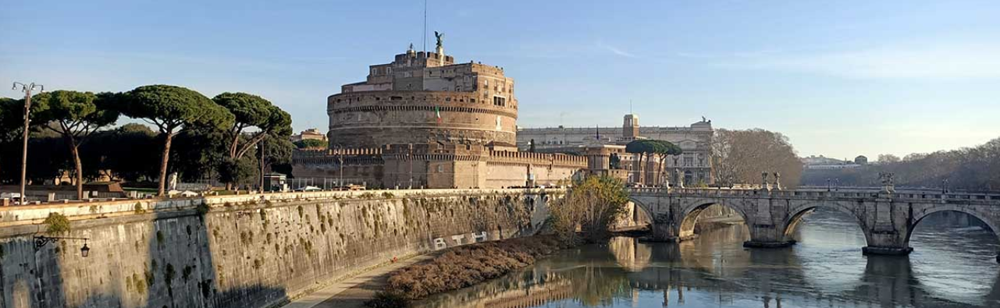